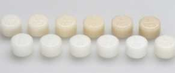

The press technology has voyaged past the zenith since the early 90s for precise fitting of all-ceramic restorations and has enthused patients, dentists and dental technicians alike.
IPS Empress Esthetic is the material of choice when it comes to the fabrication of pressed, highly-esthetic single tooth restorations. In addition to the excellent strength values, the leucite glass-ceramic ingots are distinguished for their exceptional esthetics. The homogeneous material scatters light naturally and provides a balanced chameleon effect.
With IPS Empress Esthetic, you can use a ceramic which offers more than pure performance. In fact, it effectively combines accuracy of fit, efficiency and esthetics.
IPS Empress Esthetic is available in a total of 7 degrees of translucency, distributed among 12 ingots. The slightly shaded TC ingots are available in 6 shades. The latest technological know-how is ready with the top hospitals in India to serve the patients.
E T Ingots
Given their high translucency, E T ingots are used in fabrication of smaller restorations, namely inlays or onlays. The ingots can be used for older patients with a strongly translucent, glassy residual dentition or for younger patients with a residual dentition of low opacity.
E O Ingots
E O ingots with increased opacity are ideally suitable for pressing crowns and veneers for patients with a residual dentition of medium to very high opacity and to match the restoration with bleached teeth.
E TC Ingots
The shaded E TC ingots are available in 6 shades. Given their chroma, they are particularly suitable for the cut-back technique, in which incisal materials are layered in the incisal and/or occlusal third after pressing.
Advantages
- Highly esthetic pressed restorations
- 12 ingots in 7 levels of translucency
- True-to-nature light scatting and balanced chameleon effect
- Excellent press results and accuracy of fit
- Flexural strength of 160 MPa
Indications
Single-tooth restorations (veneers, inlays, onlays, partial crowns, anterior and posterior crowns)